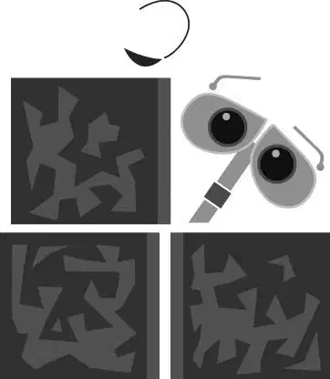

在浩瀚的外太空中，在上百万颗闪闪发亮的星球的另一边，阴暗的地球笼罩在一团烟雾中，在孤单单、静悄悄地漂浮着。地球上最深的海洋都已干涸，不复存在。曾经蔚蓝的天空，而今被灰尘遮蔽，变成褐色，只有在阳光穿透它时，看上去才接近金色。
厚厚的大气层包裹着地球。在大气层下面，群山依旧挺拔，却是耸立在雾霾之上。曾经繁华的大城市空无一人，到处都是破损坍塌的大楼。风景中还有一座座高耸的垃圾堆—垃圾被压成一个个方块，整整齐齐地摞成高塔，一望无际。二十九世纪荒凉的地平线上只有一个物体在移动。
七百多年来，他日复一日地清理着人类遗留下的垃圾。粗糙的沙土横扫过街道，却没能阻挡他的工作。他将铁铲形的双手插入垃圾堆中，再将垃圾揽到他胸部的压缩部件内。等压缩部件满了，他就关上胸前面板上嘎吱作响的门，微微摇晃，将垃圾压缩成一个完美的方块，只等着被摞起来。
这是他的指令。
他的程序设定就是做这些。
他的名字叫作“瓦力”，是一台地球垃圾分装装置。
他是一个机器人。
他浑身遍布凹痕、污垢和锈迹……
他将要改变整个世界。
